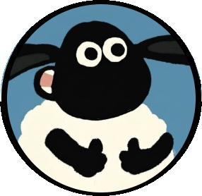
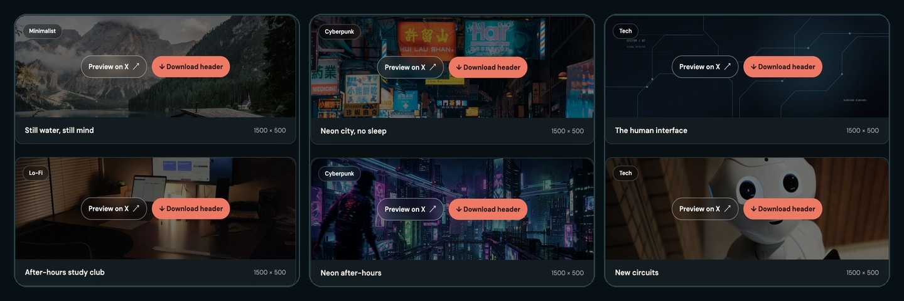
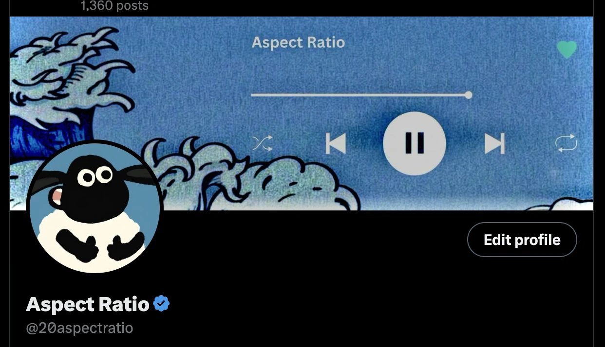

01 / A work in progress
Aspect Ratio
Non-technical beginner. Posting the messy version.
From color on a canvas to code on a screen ↓

Aspect Ratio
02 / Current project
X Banners Studio
Free headers. Made by a beginner who kept poking it until it looked like a product.
Open it
One thing at a time ↓
Aspect Ratio

03 / In public
Learning out loud.
The experiments, the fixes, and the messy version as it comes together.
@20aspectratio Visit my X account- Fixing the banner site.
- Posting the messy version.
- Not starting five new ideas.